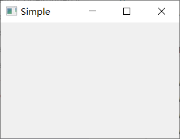
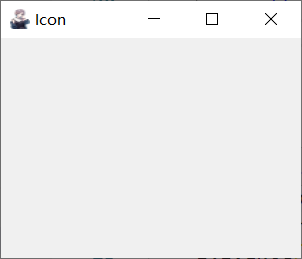
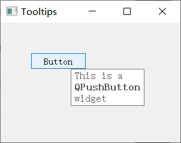
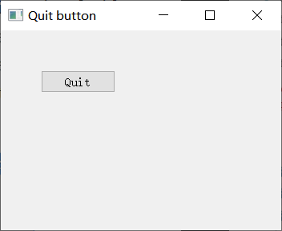
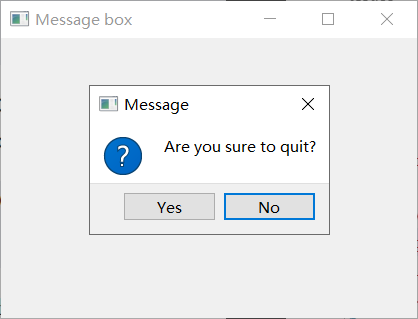

翻译自原文：First programs in PyQt5
翻译时间 2020 年 8 月 18 日
在 PyQt5 教程的这一部分中，我们学习一些基本功能。这些示例显示工具提示和图标、关闭窗口、显示消息框并在桌面上居中显示窗口。
PyQt5 简单示例
这是一个显示小窗口的简单示例，然而，我们可以用这个窗口做很多事，我们可以调整大小，最大化它或最小化它，这需要大量的编码，有人已经编码了此功能。由于在大多数应用程序中重复，因此无需再次编写代码。PyQt5 是一个高级工具包。如果我们在较低级别的工具包中编写代码，下面的代码示例可以很容易地包含数百行。
simple.py
import sys
from PyQt5.QtWidgets import QApplication, QWidget
def main():
app = QApplication(sys.argv)
w = QWidget()
w.resize(250, 150)
w.move(300, 300)
w.setWindowTitle('Simple')
w.show()
sys.exit(app.exec_())
if __name__ == '__main__':
main()
|
上面的代码示例显示屏幕上的一个小窗口。
import sys
from PyQt5.QtWidgets import QApplication, QWidget
|
在这里，我们提供必要的进口。基本小部件位于PyQt5.QtWidgets模块中。
app = QApplication(sys.argv)
|
每个 PyQt5 应用程序都必须创建一个应用程序对象。sys.argv参数是命令行中的参数列表。Python 脚本可以从 shell 运行。这是一种控制脚本启动的方法。
QWidget部件是 PyQt5 中所有用户界面对象的基类。我们提供 QWidget的默认构造函数。默认构造函数没有父级。没有父级的小部件称为窗口。
resize()方法调整小部件的大小。它是250px宽和150px高。
move()方法将小部件移动到屏幕上的 x=300、y=300 坐标位置。
w.setWindowTitle('Simple')
|
我们用setWindowTitle()设置窗口的标题。标题显示在标题栏中。
show()方法在屏幕上显示小部件。小部件首先在内存中创建，随后在屏幕上显示。
最后，我们输入应用程序的主循环（mainloop）。事件处理从这一点开始。主循环从窗口系统接收事件，并将它们发送到应用程序部件。如果我们调用exit()方法或主部件被销毁，则主循环结束。sys.exit()方法可确保干净退出。环境将通知如何结束应用程序。
exec_()方法具有下划线，这是因为exec是 Python 关键字，因此使用exec_()。

图:Simple
应用程序图标
应用程序图标是一个小图像，通常显示在标题栏的左上角。在下面的示例中，我们将演示如何在 PyQt5 中做到这一点。我们还将介绍一些新的方法。
某些环境不在标题栏中显示图标。我们需要启用它们。如果看不到任何图标，请参阅原文作者在 Stackoverflow 上的答案，了解解决方案。
icon.py
import sys
from PyQt5.QtWidgets import QApplication, QWidget
from PyQt5.QtGui import QIcon
from PyQt5.QtCore import QFileInfo
class Example(QWidget):
def __init__(self):
super().__init__()
self.initUI()
def initUI(self):
self.setGeometry(300, 300, 300, 220)
self.setWindowTitle('Icon')
root = QFileInfo(__file__).absolutePath()
self.setWindowIcon(QIcon(root + '/web.png'))
self.show()
def main():
app = QApplication(sys.argv)
ex = Example()
sys.exit(app.exec_())
if __name__ == '__main__':
main()
|
前面的示例以过程样式进行编码。Python 编程语言支持过程和面向对象的编程样式。PyQt5 中的编程意味着在 OOP 中编程。
class Example(QWidget):
def __init__(self):
super().__init__()
...
|
面向对象的编程中的三个重要方面是类、数据和方法。在这里，我们创建一个名为Example的新类，Example类从QWidget类继承。这意味着我们调用两个构造函数：第一个用于Example类，第二个用于被继承类QWidget。super()方法返回Example类的父对象，我们调用其构造函数。__init__()方法是Python语言中的构造函数方法。
GUI 的创建委派给initUI()方法。
self.setGeometry(300, 300, 300, 220)
self.setWindowTitle('Icon')
self.setWindowIcon(QIcon('web.png'))
|
这三种方法都是从QWidget类继承的：
setGeometry()做两件事：它定位屏幕上的窗口并设置其大小。
- 前两个参数是窗口的 x 和 y 位置
- 第三个是宽度
- 第四个是窗口的高度
- 事实上，它结合了
resize()和move()方法
-
setWindowTitle()设置窗口标题
-
setWindowIcon()方法设置应用程序图标。为此，我们创建了一个QIcon对象，接收要显示的图标的路径。
def main():
app = QApplication(sys.argv)
ex = Example()
sys.exit(app.exec_())
|
创建应用程序和示例对象。主循环已启动。

图：图标显示
在 PyQt5 中显示工具提示
我们可以为我们的任何部件提供”显示帮助“。
tooltip.py
import sys
from PyQt5.QtWidgets import (QWidget, QToolTip,
QPushButton, QApplication)
from PyQt5.QtGui import QFont
class Example(QWidget):
def __init__(self):
super().__init__()
self.initUI()
def initUI(self):
QToolTip.setFont(QFont('SansSerif', 10))
self.setToolTip('This is a <b>QWidget</b> widget')
btn = QPushButton('Button', self)
btn.setToolTip('This is a <b>QPushButton</b> widget')
btn.resize(btn.sizeHint())
btn.move(50, 50)
self.setGeometry(300, 300, 300, 200)
self.setWindowTitle('Tooltips')
self.show()
def main():
app = QApplication(sys.argv)
ex = Example()
sys.exit(app.exec_())
if __name__ == '__main__':
main()
|
在此示例中，我们显示两个 PyQt5 小部件的工具提示。
QToolTip.setFont(QFont('SansSerif', 10))
|
此静态方法设置用于呈现工具提示的字体。我们使用 10pt 的 SansSerif 字体。
self.setToolTip('This is a <b>QWidget</b> widget')
|
若要创建工具提示，我们调用setTooltip()方法。我们可以使用富文本格式。
btn = QPushButton('Button', self)
btn.setToolTip('This is a <b>QPushButton</b> widget')
|
我们创建一个按钮小部件，并为此设置一个工具提示。
btn.resize(btn.sizeHint())
btn.move(50, 50)
|
调整按钮的大小和在窗口上的位置。sizeHint()方法为按钮提供了建议的大小。

图：工具提示
关闭窗口
关闭窗口的显示方式是单击标题栏上的✖标记。在下面的示例中，我们将演示如何以编程方式关闭窗口。我们将简要触摸信号和插槽。
以下是我们在示例中使用的QPushButton部件的构造函数。
QPushButton(string text, QWidget parent = None)
|
text参数是将显示在按钮上的文本。parent是一个部件用来放置我们的按钮，在我们的案例中，这将是一个QWidget。应用程序中的部件呈现层次结构，在此层次结构中，大多数部件都有其父母，没有父母的部件是顶级窗口。
quit_button.py
import sys
from PyQt5.QtWidgets import QWidget, QPushButton, QApplication
class Example(QWidget):
def __init__(self):
super().__init__()
self.initUI()
def initUI(self):
qbtn = QPushButton('Quit', self)
qbtn.clicked.connect(QApplication.instance().quit)
qbtn.resize(qbtn.sizeHint())
qbtn.move(50, 50)
self.setGeometry(300, 300, 350, 250)
self.setWindowTitle('Quit button')
self.show()
def main():
app = QApplication(sys.argv)
ex = Example()
sys.exit(app.exec_())
if __name__ == '__main__':
main()
|
在此示例中，我们创建一个退出按钮。单击该按钮后，应用程序将终止。
qbtn = QPushButton('Quit', self)
|
我们创建一个按钮，该按钮是QPushButton类的实例。构造函数的第一个参数是按钮的标签。第二个参数是父部件，父部件是Example，它继承自QWidget。
qbtn.clicked.connect(QApplication.instance().quit)
|
PyQt5 中的事件处理系统由信号和插槽机制构建。如果我们单击该按钮，clicked信号将发出。插槽可以是 Qt 插槽或任何 Python 可调用。
使用QApplication.instance()检索到的**QCoreApplication**包含主事件循环，它处理并调度所有事件。单击的信号连接到终止应用程序的quit()方法。通信在两个对象之间完成：发送方和接收方，发送方是按钮，接收方是应用程序对象。

图：退出按钮
PyQt5 消息框
默认情况下，如果我们单击标题栏上的 ✖ 按钮，则QWidget关闭，有时我们想要修改此默认行为。例如，如果我们在编辑器中打开了一个文件，我们为此进行了一些更改。我们显示一个消息框来确认操作。
messagebox.py
import sys
from PyQt5.QtWidgets import QWidget, QMessageBox, QApplication
class Example(QWidget):
def __init__(self):
super().__init__()
self.initUI()
def initUI(self):
self.setGeometry(300, 300, 250, 150)
self.setWindowTitle('Message box')
self.show()
def closeEvent(self, event):
reply = QMessageBox.question(self, 'Message',
"Are you sure to quit?", QMessageBox.Yes |
QMessageBox.No, QMessageBox.No)
if reply == QMessageBox.Yes:
event.accept()
else:
event.ignore()
def main():
app = QApplication(sys.argv)
ex = Example()
sys.exit(app.exec_())
if __name__ == '__main__':
main()
|
如果我们关闭QWidget，QCloseEvent将生成 。要修改部件行为，我们需要重新实现事件处理程序closeEvent()。
reply = QMessageBox.question(self, 'Message',
"Are you sure to quit?", QMessageBox.Yes |
QMessageBox.No, QMessageBox.No)
|
我们显示一个包含两个按钮的消息框：Yes和No。第一个字符串将显示在标题栏上，第二个字符串是对话框显示的消息文本，第三个参数指定对话框中显示的按钮的组合，最后一个参数是默认按钮，它是最初具有键盘焦点的按钮。返回值存储在reply变量中。
if reply == QtGui.QMessageBox.Yes:
event.accept()
else:
event.ignore()
|
在这里，我们测试返回值。如果我们单击”是”按钮，我们接受导致关闭小部件和终止应用程序的事件。否则，我们忽略关闭事件。

图：消息框
屏幕上的居中窗口
以下脚本演示了如何在桌面屏幕上居中设置窗口的中心。
center.py
import sys
from PyQt5.QtWidgets import QWidget, QDesktopWidget, QApplication
class Example(QWidget):
def __init__(self):
super().__init__()
self.initUI()
def initUI(self):
self.resize(250, 150)
self.center()
self.setWindowTitle('Center')
self.show()
def center(self):
qr = self.frameGeometry()
cp = QDesktopWidget().availableGeometry().center()
qr.moveCenter(cp)
self.move(qr.topLeft())
def main():
app = QApplication(sys.argv)
ex = Example()
sys.exit(app.exec_())
if __name__ == '__main__':
main()
|
QDesktopWidget类提供有关用户桌面的信息，包括屏幕大小。
将窗口居中的代码放置在自定义方法center()中。
qr = self.frameGeometry()
|
我们得到一个矩形，指定主窗口的几何体。这包括任何窗口框架。
cp = QDesktopWidget().availableGeometry().center()
|
我们计算出显示器的屏幕分辨率。从这个分辨率，我们得到中心点。
我们的矩形已经有它的宽度和高度，现在我们将矩形的中心设置为屏幕的中心，矩形的大小保持不变。
我们将应用程序窗口的左上角移动到 qr 矩形的左上角，从而将窗口居中在屏幕上。
先取窗口矩形（模型），将矩形居中，再将程序窗口放到矩形中
在 PyQt5 教程的这一部分中，我们在 PyQt5 中创建了简单的代码示例。